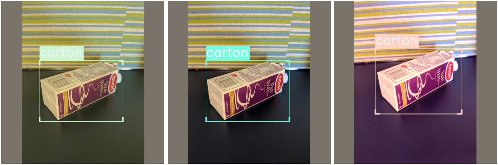
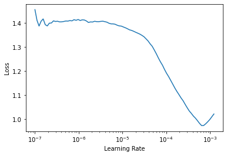
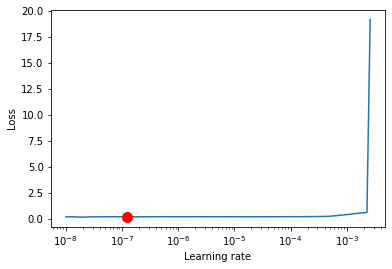

Quickstart
Introduction
This tutorial walk you through the different steps of training one of the MMDetection models supported in IceVision. We use either the Fridge Objects dataset or the PennFudan dataset.
The IceVision Framework is an agnostic framework. As an illustration, we will train our model using both the fastai library, and pytorch-lightning libraries.
For more information about how the fridge dataset as well as its corresponding parser check out the IceData repository.
Installing IceVision and IceData
# !pip install icevision[all] icedata -q
!pip install git+git://github.com/airctic/icevision.git#egg=icevision[all] --upgrade -q
!pip install -e icevision[all] --upgrade -q
# !pip install icedata -q
!pip install git+git://github.com/airctic/icedata.git --upgrade -q
[K |████████████████████████████████| 92kB 3.9MB/s
[?25h Building wheel for icedata (setup.py) ... [?25l[?25hdone
Building wheel for fire (setup.py) ... [?25l[?25hdone
MMDetection Installation
# Install mmdetection
!rm -rf mmdetection
!git clone https://github.com/open-mmlab/mmdetection.git
!pip install -e mmdetection -q
Cloning into 'mmdetection'...
remote: Enumerating objects: 16432, done.[K
remote: Total 16432 (delta 0), reused 0 (delta 0), pack-reused 16432[K
Receiving objects: 100% (16432/16432), 19.64 MiB | 17.01 MiB/s, done.
Resolving deltas: 100% (11385/11385), done.
Building wheel for terminaltables (setup.py) ... [?25l[?25hdone
Check Pytorch installation
import torch, torchvision
torch_version = torch.__version__
cuda_version = f"cu{torch.version.cuda.replace('.', '')}"
torch_version, cuda_version
('1.7.0', 'cu102')
MMCV Full-Version Installation
mmcv_full_version = "1.2.5"
mmcv_full_url = f"https://download.openmmlab.com/mmcv/dist/{cuda_version}/torch{torch_version}/index.html" #e.g https://download.openmmlab.com/mmcv/dist/cu101/torch1.7.0/index.html
mmcv_full_url
!pip install mmcv-full=={mmcv_full_version} -f {mmcv_full_url} -U -q
# Restart Runtime
import os
def restart_runtime():
os.kill(os.getpid(), 9)
restart_runtime()
import mmcv
print("MMCV: ", mmcv.__version__)
# Check MMDetection installation
import mmdet
print("MMDetection: ", mmdet.__version__)
# Check mmcv installation
from mmcv.ops import get_compiling_cuda_version, get_compiler_version
print(get_compiling_cuda_version())
print(get_compiler_version())
'https://download.openmmlab.com/mmcv/dist/cu102/torch1.7.0/index.html'
[K |████████████████████████████████| 24.1MB 1.6MB/s
[K |████████████████████████████████| 194kB 4.1MB/s
[?25h
MMDetection: 2.10.0
10.2
GCC 7.3
If mmdet is not recognized, Restart Runtime from the "Runtime Menu"
Imports
from icevision.all import *
MMDetection Models Information
models_info contain all the necessary configuration information to build an MMDetection model. That includes:
- 'model_name'
- 'model_type'
- 'cfg_filepath'
- 'weights_url'
Select a Model to train
You can select one of the following models: "retinanet", "fcos", "faster_rcnn", "mask_rcnn"
model_type = models.mmdet.retinanet
Datasets :
- For Object Detection the Fridge Object Dataset will be used
- For Mask Detection the PennFudan Dataset will be used
data_dir = icedata.fridge.load_data()
parser = icedata.fridge.parser(data_dir)
train_records, valid_records = parser.parse()
train_records[0]
0%| | 0/20380998 [00:00<?, ?B/s]
0%| | 0/128 [00:00<?, ?it/s]
[1m[1mINFO [0m[1m[0m - [1m[34m[1mAutofixing records[0m[1m[34m[0m[1m[0m | [36micevision.parsers.parser[0m:[36mparse[0m:[36m134[0m
BaseRecord
presize, size = 512, 384
train_tfms = tfms.A.Adapter(
[*tfms.A.aug_tfms(size=size, presize=presize), tfms.A.Normalize()]
)
valid_tfms = tfms.A.Adapter([*tfms.A.resize_and_pad(size=size), tfms.A.Normalize()])
train_ds = Dataset(train_records, train_tfms)
valid_ds = Dataset(valid_records, valid_tfms)
train_dl = model_type.train_dl(train_ds, batch_size=8, num_workers=4, shuffle=True)
valid_dl = model_type.valid_dl(valid_ds, batch_size=8, num_workers=4, shuffle=False)
parser.class_map
common:
- Image size ImgSize(width=499, height=666)
- Filepath: /root/.icevision/data/fridge/odFridgeObjects/images/96.jpg
- Image: None
- Image ID: 124
detection:
- BBoxes: [<BBox (xmin:86, ymin:244, xmax:426, ymax:493)>]
- Labels: [2]
<ClassMap: {'background': 0, 'milk_bottle': 1, 'carton': 2, 'can': 3, 'water_bottle': 4}>
Visualization
Showing some images
samples = [train_ds[0] for _ in range(3)]
show_samples(samples, ncols=3, class_map=parser.class_map)

Creating a Model
# Use autocompletion to check out all the available pretrained backbones (e.g. retinanet has 10 of them)
backbone = model_type.backbones.r50_fpn_1x
model = model_type.model(backbone=backbone, num_classes=len(parser.class_map))
0%| | 0/152149505 [00:00<?, ?B/s]
The model and loaded state dict do not match exactly
size mismatch for bbox_head.retina_cls.weight: copying a param with shape torch.Size([720, 256, 3, 3]) from checkpoint, the shape in current model is torch.Size([36, 256, 3, 3]).
size mismatch for bbox_head.retina_cls.bias: copying a param with shape torch.Size([720]) from checkpoint, the shape in current model is torch.Size([36]).
Training
Training - Fastai
# Fastai trainable_params splitter
learn = model_type.fastai.learner(dls=[train_dl, valid_dl], model=model, splitter=fastai.trainable_params)
# Using param_groups (model splitter)
# - 6 groups for OneStageDetector model (fcos, retinanet)
# - 7 groups for TwoStageDetector model (faster_rcnn, mask_rcnn, sparse_rcnn)
#learn = model_type.fastai.learner(dls=[train_dl, valid_dl], model=model)
# learn.lr_find()
# For Sparse-RCNN, use lower `end_lr`
learn.lr_find(end_lr=0.005)
SuggestedLRs(lr_min=6.399789708666503e-05, lr_steep=8.191461529349908e-05)

learn.fine_tune(20, 4e-5)
| epoch | train_loss | valid_loss | time |
|---|---|---|---|
| 0 | 1.330726 | 1.163189 | 00:06 |
| epoch | train_loss | valid_loss | time |
|---|---|---|---|
| 0 | 1.193407 | 1.078116 | 00:05 |
| 1 | 1.129870 | 0.943164 | 00:05 |
| 2 | 1.041448 | 0.741737 | 00:05 |
| 3 | 0.928491 | 0.567307 | 00:05 |
| 4 | 0.809053 | 0.400839 | 00:05 |
| 5 | 0.705078 | 0.325770 | 00:05 |
| 6 | 0.617037 | 0.277483 | 00:05 |
| 7 | 0.543727 | 0.227804 | 00:05 |
| 8 | 0.477586 | 0.210975 | 00:05 |
| 9 | 0.429538 | 0.176158 | 00:05 |
| 10 | 0.387443 | 0.166954 | 00:05 |
| 11 | 0.347843 | 0.155527 | 00:05 |
| 12 | 0.322323 | 0.162244 | 00:05 |
| 13 | 0.302024 | 0.154544 | 00:05 |
| 14 | 0.279943 | 0.149191 | 00:05 |
| 15 | 0.264075 | 0.145821 | 00:05 |
| 16 | 0.246139 | 0.145847 | 00:05 |
| 17 | 0.232711 | 0.140088 | 00:05 |
| 18 | 0.222297 | 0.140231 | 00:05 |
| 19 | 0.213565 | 0.140449 | 00:05 |
Training - Pytorch-Lightning
class LitModel(model_type.lightning.ModelAdapter):
def configure_optimizers(self):
return Adam(self.parameters(), lr=1e-5)
lit_model = LitModel(model)
trainer = pl.Trainer(max_epochs=10, gpus=1, num_sanity_val_steps=0, check_val_every_n_epoch=1)
lr_finder = trainer.tuner.lr_find(lit_model, train_dl, valid_dl, max_lr=0.005)
GPU available: True, used: True
TPU available: None, using: 0 TPU cores
fig = lr_finder.plot(suggest=True)
fig.show()
| Name | Type | Params
------------------------------------
0 | model | RetinaNet | 36.4 M
------------------------------------
36.2 M Trainable params
225 K Non-trainable params
36.4 M Total params
145.568 Total estimated model params size (MB)
Finding best initial lr: 0%| | 0/100 [00:00<?, ?it/s]
LR finder stopped early due to diverging loss.
Restored states from the checkpoint file at /content/lr_find_temp_model.ckpt

trainer.fit(lit_model, train_dl, valid_dl)
Show Results
model_type.show_results(model, valid_ds, detection_threshold=.5)

Inference
preds = model_type.predict(model, valid_ds)
show_preds(
preds=preds[:6],
denormalize_fn=denormalize_imagenet,
ncols=3,
)

Happy Learning!
If you need any assistance, feel free to join our forum.